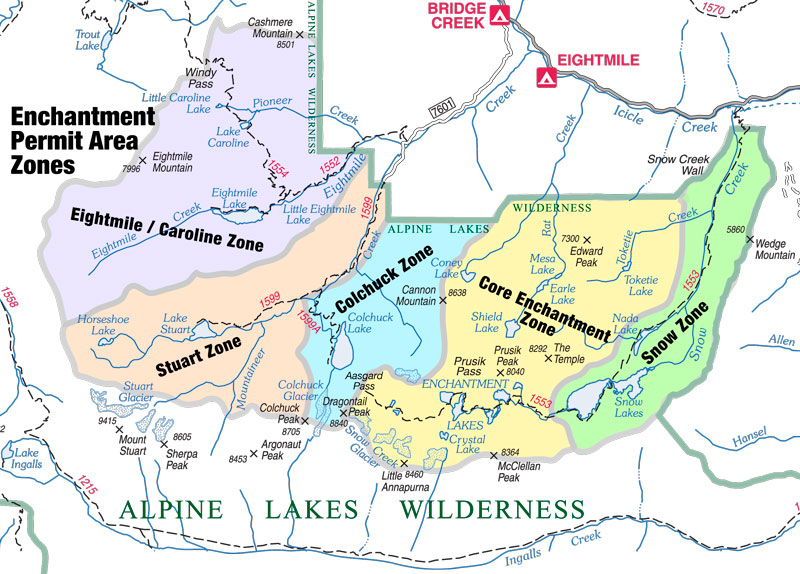
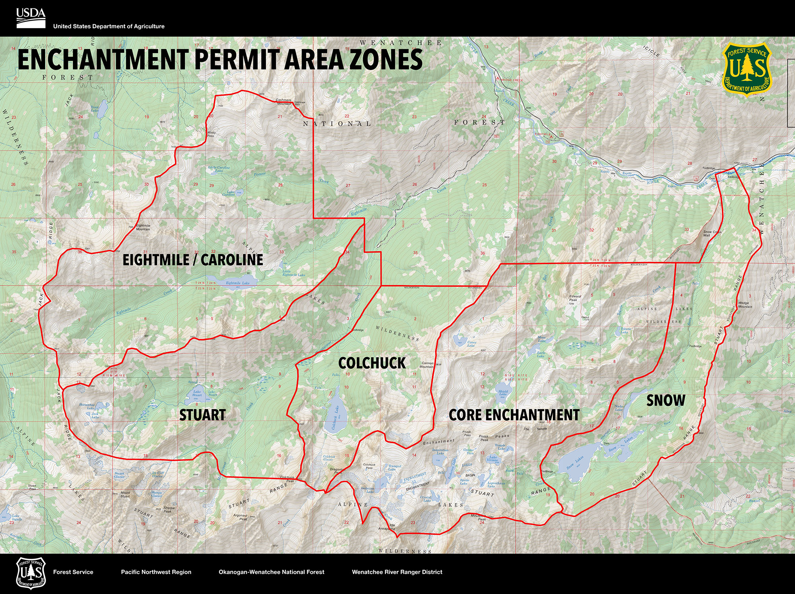
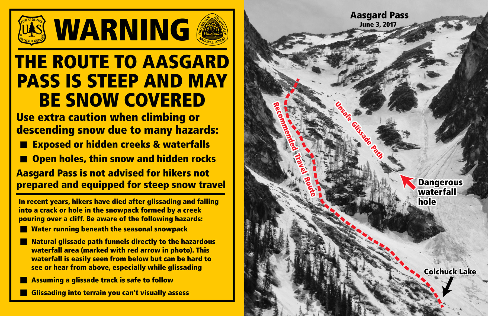
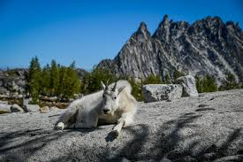
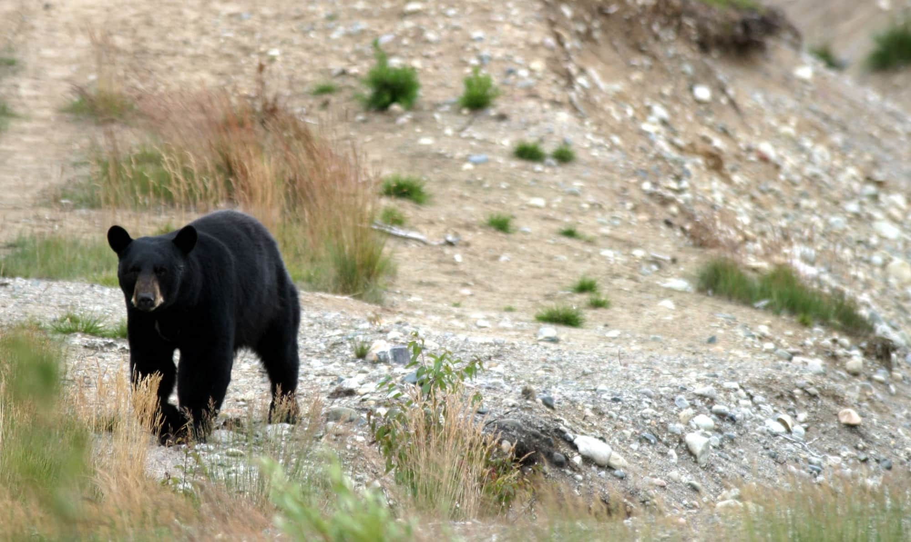
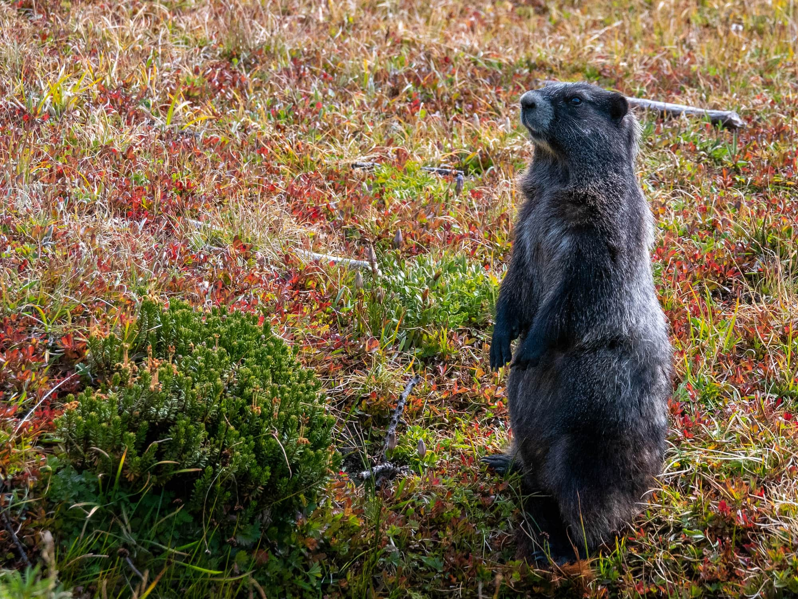
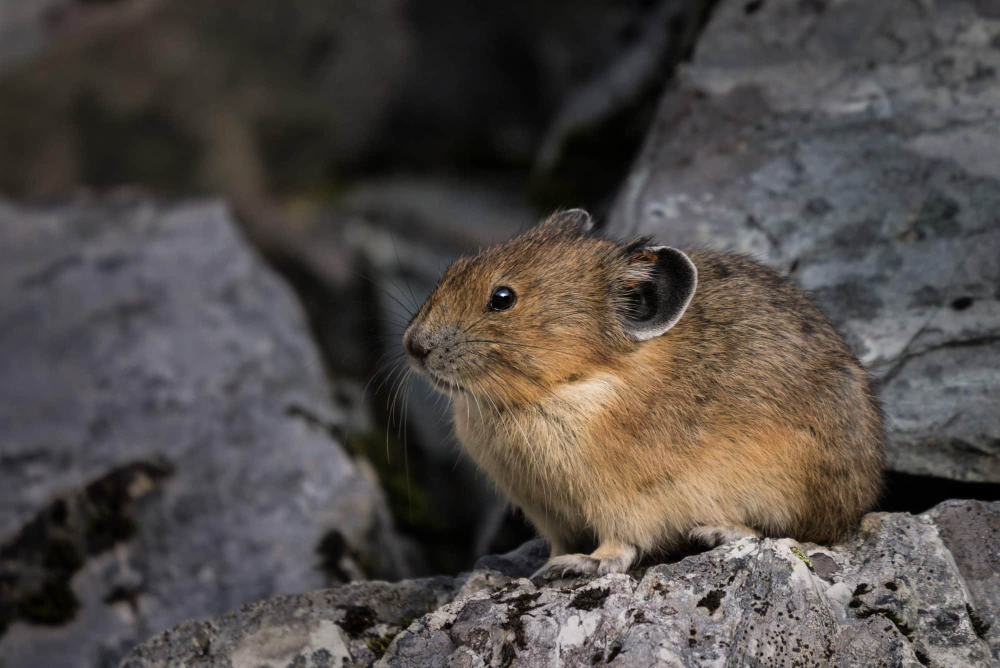
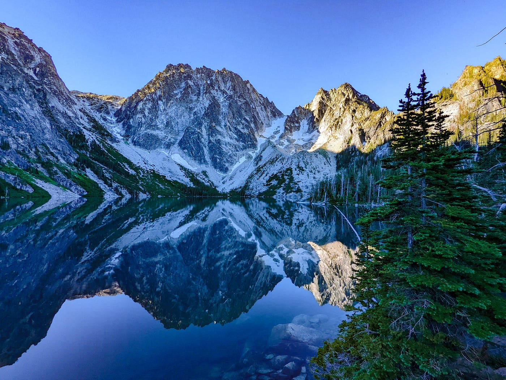
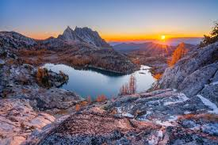
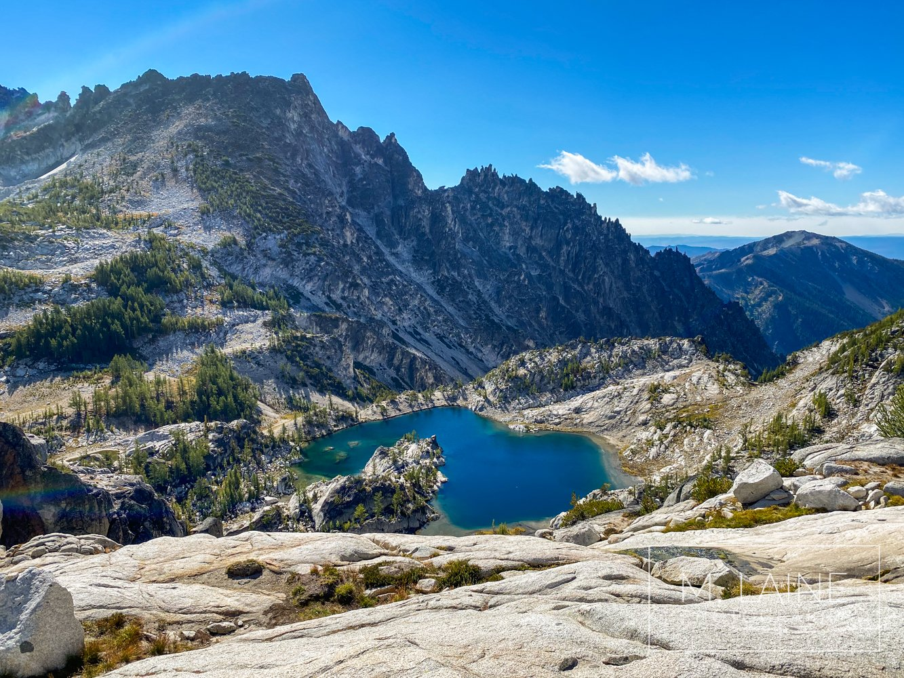

Enchantments Permits
The US Forest Service has deemed that overnight stays on the enchantments require a permit, this website provides the step by step process on how to obtain the permits.



Wildlife
The enchantments is a safe haven for Wildlife in Washington state. Among some of the wildlife you will encounter and some you hope not to are The mountain goats, Black bears (hopefully you dont see any), Marmots and Pikas.




Trail
The enchantments trail is seen as a extremely challenging not only physically but mentally with some of the steepest ascents and decents in washington state. Rewarding the hiker with unforgettable views throughout the trek.


